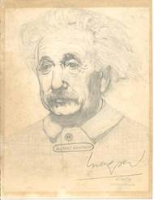
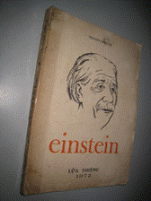

Cuốn Einstein của cụ Nguyễn Hiến Lê là một trong các tác phẩm mà tôi đã có ý định thực hiện eBook từ mấy năm nay, sau khi nhận được bức chân dung Einstein do một người bạn học, bạn Lương Văn Sơn, vẽ bằng bút chì từ ngày 19/10/1974, một trong mấy ngày bạn ấy đói meo trên một căn gác trọ ọp ẹp – tôi quên tên đường - gần trường Đại học Khoa học Sài Gòn. Cuối tháng 6 năm 2010, trong lúc nằm bệnh viện Chợ Rẩy, tôi được bạn Sơn cho hay là đang tập Một cái nhìn mới về thế giới tự nhiên”, xét lại thuyết tương đối hẹp của Einstein, nên tôi mò ra đường Trần Nhân Tôn để tìm cuốn Einstein của cụ Nguyễn Hiến Lê, nhưng chỉ mua được cuốn Einstein của Nguyễn Xuân Sanh (ngày 02/07/2010).

Chân dung Albert Einstein
Lương Văn Sơn (Cần Thơ) vẽ tại Sài Gòn ngày 19/10/1974
Gần đây bạn Ca_kiem cho tôi hay là trong Tuyển Tập Nguyễn Hiến Lê (Tập II: Sử học) của Nxb Văn học, năm 2006 có Phần I: Eintein – Đời sống và tư tưởng (“in theo bản NXB Lửa Thiêng, 1972 Sài Gòn”) và gởi cho tôi bản scan. Trong thời gian thực hiện eBook này, tôi thường xem lại cuốn Einstein của Nguyễn Xuân Sanh để, nếu thấy cần, trích đôi dòng cho vào chú thích.

Ảnh bìa cuốn Einstein của Nguyễn Hiến Lê
Nhà xuất bản Lửa Thiêng, năm 1972
(Nguồn: Sachxua.net)
Goldfish
Ngày 23/04/2012